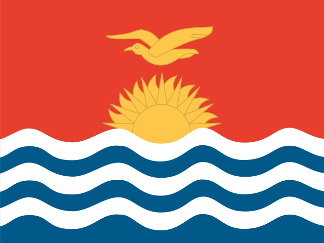

Countries › Oceania
Kiribati
Where Kiribati stands out
▲ MOST
2nd Maldives79.7
Maldives79.7
3rdKiribati72.3
4thTuvalu55.9
3rd of 171 · Food and Agriculture Organization (FAO) Food Balance Sheets, 2023
▲ MOST
3rd Sao Tome and Principe40.9%
Sao Tome and Principe40.9%
4thKiribati39.5%
5th Marshall Islands38.1%
Marshall Islands38.1%
4th of 189 · FAO, via World Bank, World Development Indicators (WDI), 2023
▲ MOST
6th Nauru1,428,571
Nauru1,428,571
7thKiribati1,409,371
8thSeychelles1,074,398
7th of 192 · Central Intelligence Agency (CIA) World Factbook and World Bank (derived), 2024
▲ MOST
11th Chile3,668,775
Chile3,668,775
12thKiribati3,440,220
13th Mexico3,187,013
Mexico3,187,013
12th of 191 · Marine Regions, World Exclusive Economic Zone (EEZ) version 12, 2023
Size, sea and borders
811 km²172nd of 195
Sea area it controlsMarine Regions, World EEZ version 12, 2023 · doi.org
3,440,220 km²12th of 191
1,143 kilometres (km)70th of 193
Coastline for its sizeCIA World Factbook and World Bank (derived), 2024 · web.archive.org (cia.gov)
1,409,371 m per 1,000 km²7th of 192
Number of land bordersGeoNames, 2026-08 · download.geonames.org
0158th of 195, tied with 37
Land and height
81 m187th of 194
Average elevationCIA World Factbook, 2024 edition, 2024 · web.archive.org (cia.gov)
2 m158th of 161, tied with 3
1.3% of land177th of 192
Orchards and plantationsFAO, via World Bank, WDI, 2023 · data.worldbank.org
39.5% of land4th of 189
People
132,530 people178th of 195
Population densityWorld Bank, WDI, 2023 · data.worldbank.org
163 people per km²56th of 192
22.7 years136th of 195
66.5 years157th of 195
Under-5 mortalityUnited Nations Inter-agency Group for Child Mortality Estimation (UN IGME), via World Bank, WDI, 2024 · data.worldbank.org
53.1 per 1,000 births25th of 193
People living in one homeUnited Nations Department of Economic and Social Affairs (UN DESA) Household Size and Composition, 2022 · un.org
5.917th of 152
Cities growingUN DESA World Urbanization Prospects 2025, via World Bank, WDI, 2023 · data.worldbank.org
3.1% a year43rd of 194
Food, power and travel
Fish & seafood supplyFAO Food Balance Sheets, 2023 · bulks-faostat.fao.org
72.3 kg per person a year3rd of 171
21126th of 189
Road per 100 km² of landCIA World Factbook and World Bank (derived), 2024 · web.archive.org (cia.gov)
82.6 km45th of 187
Football and chess
Football internationals played, all timeInternational football results (martj42), 2026 · github.com
11189th of 193
See all 97 facts about Kiribati
Showing 20 highlights for Kiribati. Rank counts from the highest value among the countries that have data: 1st is the most. Ties share a rank. Data version 91, 22 November 2026.
Sort Kiribati against four others
The game has figures for Kiribati on 132 of its 190 questions.
The same game for Android and iOS. It launches on 10 December 2026.
Out now.